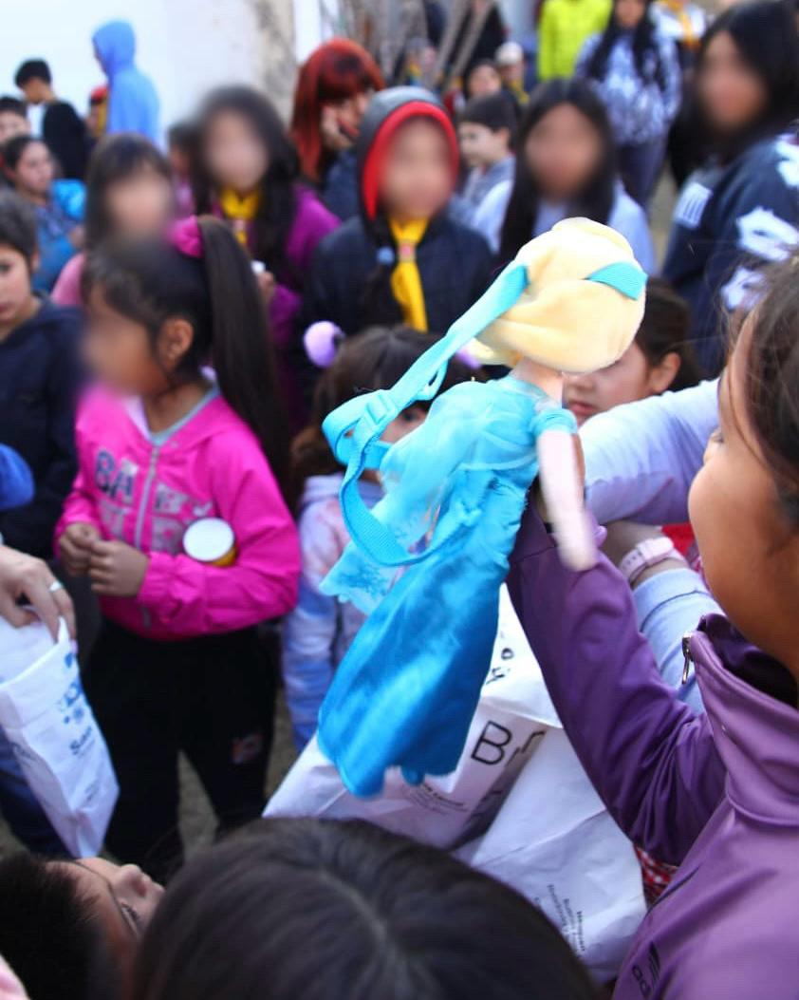
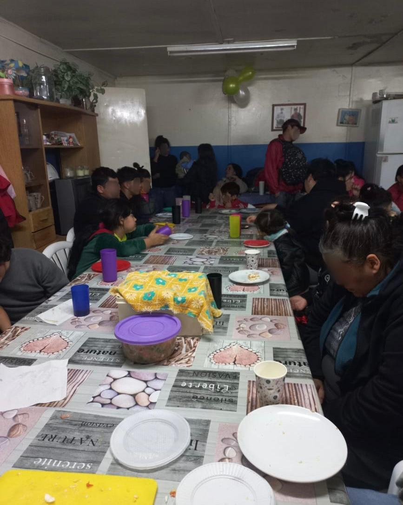

Sra. Erika y Sra. Silvia Barrientos
Correo electrónico: luzesperanza.nqn@gmail.com


“Hace 11 años que Luz de Esperanza trabaja para ayudar a su comunidad. Comenzó en la esquina de Pomona y Tronador y, desde entonces, ha reunido donaciones para el Día del Niño, colaborado durante toda la pandemia y logrado que empresas y comerciantes los conozcan y apoyen. No solo brindan un plato de comida: también acompañan a familias, niños, jóvenes y adultos mayores; ayudan a personas con adicciones; gestionan turnos en las salitas; compran medicamentos cuando es necesario y cuidan especialmente a quienes atraviesan situaciones difíciles.”

